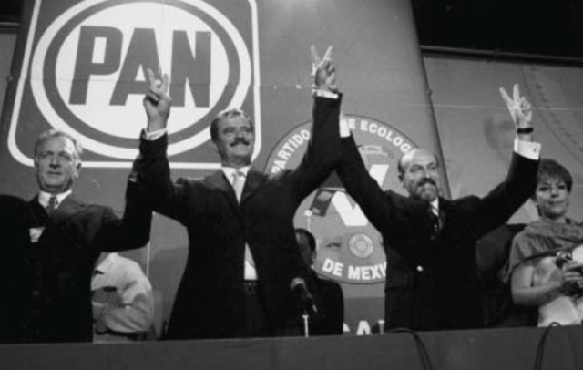
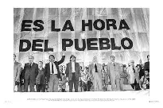
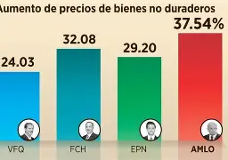
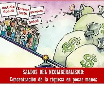
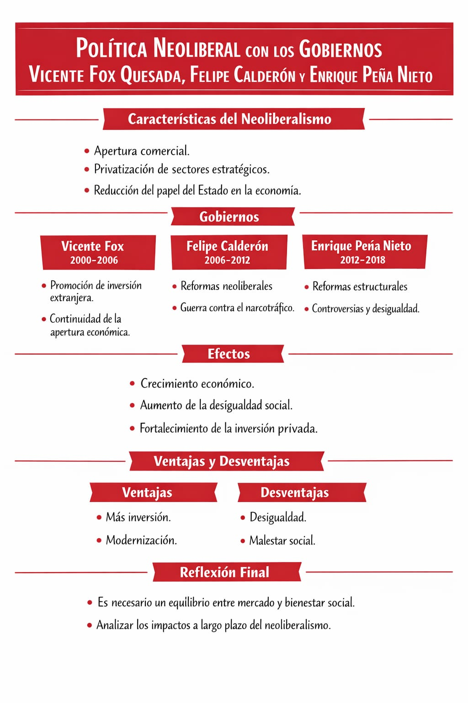

Miriam Velasco Gaytán 2-13
el neoliberalismo en México durante los gobiernos de Vicente Fox, Felipe Calderón y Enrique Peña Nieto se caracterizó por la apertura económica, la privatización de sectores estratégicos y la reducción del papel del Estado. Estas políticas buscaban impulsar el crecimiento económico mediante la inversión privada y el libre mercado, aunque también generaron críticas por la desigualdad social.
durante el gobierno de Vicente Fox (2000-2006), se continuaron las políticas neoliberales iniciadas en décadas anteriores, manteniendo la apertura comercial y promoviendo la inversión extranjera. En el sexenio de Felipe Calderón (2006-2012), se reforzaron estas políticas, aunque su gobierno también estuvo marcado por la lucha contra el narcotráfico, lo que impactó la estabilidad social y económica del país.
en el gobierno de Enrique Peña Nieto (2012-2018), se impulsaron reformas estructurales importantes, como la energética y educativa, buscando modernizar el país y atraer más inversión privada. Sin embargo, estas reformas generaron controversia, ya que muchos sectores consideraron que beneficiaban más a empresas privadas que a la población en general.




